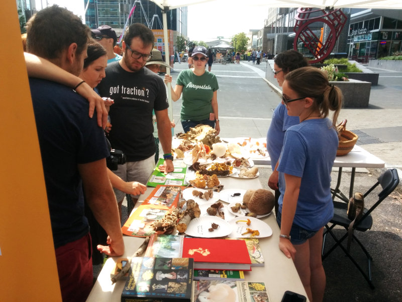

geekSPARK 2017

geekSPARK is a showcase of creative use of technology, taking place each year during the SPARKcon art festival. What lies below is a summary of the festivities at geekSPARK 2017.
RC Speedway
The RC Speedway was an incredibly fun creation by maker extraordinaire Bill Culverhouse from SplatSpace. Bill mounted cameras on the RC cars which fed wirelessly into first-person displays. The cars were fast, and the sensation of speed from the first-person view was exhilirating. I’m kicking myself for not taking any video.


Virtual Reality
Tyler Jackson brought his immersive art piece, Before the War. In it, you explore a series of thoughtful, atmospheric vignettes. This is the first time VR has made an appearance at geekSPARK and I think it’s here to stay.

I recommend reading the INDY’s review of Before the War.
All Things LED
Maniacal Labs returned again, with a bank of dazzling LED displays. Some were old favorites, but among their new creations were an infinity mirror, a light saber, and an LED Pole (the LPD8806Pole).

Another new creation was a 1D pong game. This was a blast to play. To play, you tap your button to at the exact moment the puck is passing over your paddle. If you succeed, the puck is sent shooting to the other side, increasing in speed with every deflection.

A few trusted friends were allowed to hold the light saber!
Check out this awesome summary of all the gear they brought.
Fire Tubes
Ben Pritchett returned this year with Fire Tubes and a remixed soundtrack. In essence, this exhibit is four Ruben’s tubes put together to form a four-piece organ whose fiery plumes dance with the music being played. Ben mixes music to isolate each instrument, so you can see, for example, the drum beat reflected in flame.
Mushroom Hunters
A fresh, fungusy addition to geekSPARK! Geekery need not be constrained to digital hobbies. Anna and Krystal, devoted mushroom enthusiasts, brought a huge haul of mushrooms to the event and educated visitors about mushroom eating, hunting, and biology.

Digital Motion
Digital Motion is a perennial geekSPARK exhibit featuring interactive digital displays. This year’s display is powered by Kimotion. Using a variety of sensors, we use visitors’ movement to control the display. There are many displays, ranging from interactive art to a full-blown videogame with a leaderboard (the Fish Game!).
Learn more at Kimotion.xyz.
3D Printing
3D printed parts played a role in most of the exhibits this year. The RC Speedway’s camera mounts, Digital Motion’s hand sensor mount, a slew of bits and bobs from All Things LED, all used 3D printed parts. Most of all, Bill brought in some 3D printers to teach the crowd about printing, including a gigantic printed T-Rex.

What’s next?
geekSPARK 2018! The two big goals for next year are:
- A prime location
- Excellent signage
The current location, Red Hat Annex, has served us very well (thanks Red Hat!), however it’s far enough from the center of SPARKcon that we only see a tiny fraction of the 60,000 visitors. Findability is very important at a large art festival, and we’re exploring options for a more central location next year.
Signage this year was okay, but a bit rushed. Even with the maps, many visitors weren’t able to find our locations. Next year’s signage will be simple and clear!

Special thanks
Immense appreciation goes out to all the SPARKcon and geekSPARK volunteers who made the event happen. In no particular order (randomly sorted, in fact), here is a list of everyone involved with geekSPARK 2017, or geekSPARKs of the past.
- Jared
- Krystal
- Adam
- Brandon
- Ian
- Dan
- Tyler
- Eric
- Mark
- Maniacal Labs
- Phil
- Justis
- Cas
- Anna
- Bill
- Latisha
- Ben
- Truett
- Homa